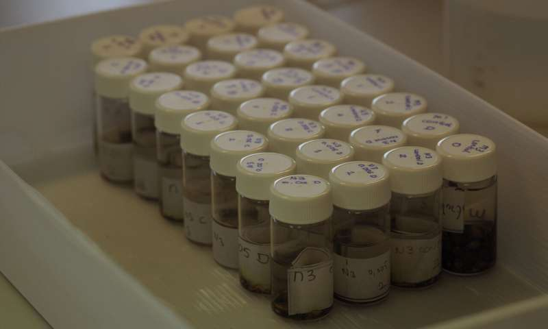
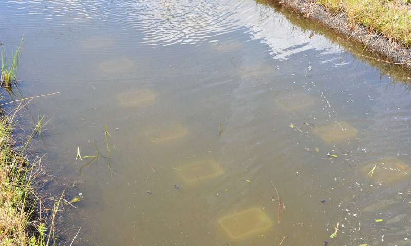

Microplastics Found to Reduce Naididae Worms in Soil Sediments
A team of researchers at Wageningen University & Research has found that microplastics in soil sediments can reduce the number of Naididae worms it can host. In their paper published in the journal Science Advances, the group describes experiments they carried out with worms and microplastics and what they learned from them.
In recent years, multiple studies have sought to understand the impact of microplastics on sea life—but few such studies have looked at similar impacts on freshwater creatures living in lakes, rivers and streams. In this new effort, the researchers sought to better understand the impact of microplastics on creatures that live in freshwater soil sediments.
The work involved setting up multiple pairs of trays in their lab containing water and soil sediments. The group added varying levels of microplastics (0.005, 0.05, and 5 percent concentrations) to all but two of the tray pairs—the two control group trays received none. The team tested the soil samples regularly by counting organism populations in the soil samples, with a focus on Naididae, a family of worms.
After three months, the researchers found no differences in worm populations between the trays, but after 15 months, they found a significant difference. In the control sample trays, the numbers of worms had increased by a factor of 13 in one tray and by 70 for the other. In stark contrast, the trays with the highest concentrations of microplastics increased by factors of just two and 30. The researchers found no measurable difference between trays with small amounts of microplastics and the control trays—and smaller differences in population growth for other types of organisms living in the soil sediments.
After three months, the researchers found no differences in worm populations between the trays, but after 15 months, they found a significant difference. In the control sample trays, the numbers of worms had increased by a factor of 13 in one tray and by 70 for the other. In stark contrast, the trays with the highest concentrations of microplastics increased by factors of just two and 30. The researchers found no measurable difference between trays with small amounts of microplastics and the control trays—and smaller differences in population growth for other types of organisms living in the soil sediments.
Worms that live in soil sediment are important because they mix the soil in the same ways as worms that live in soil on land. Such mixing moves particles and nutrients that are important for the survival of organisms that live in the soil and in the water above. Worms in the soil also help break down organic matter, keeping freshwater clean and habitable. The researchers were not able to explain why the worm population growth was lower in soil with microplastics in it, but suggest it may be due to the worms ingesting the plastic, reducing their ability to multiply.
  Continue Reading at Phys.org